Eu não sei dizer ao certo quando começou, mas eu sempre tive interesse por filmes de temática de fantasia medieval ou mesmo sobre a era medieval européia. Pouco tempo depois de começar a ter acesso a internet eu vim a saber da existência desse hobby chamado RPG, onde você poderia, usando a sua imaginação, um sistema de regras e alguns dados, criar personagens e viver histórias dentro de qualquer mundo. Eu morava no interior de SP e não tinha nada sobre isso lá na época, mas quando eu tinha 13 anos teve o primeiro encontro de RPG da cidade, e nele tive o meu primeiro contato direto com RPG, na ocasião: D&D. Logo em seguida eu entrei como jogador em um grupo de D&D 3.5 com sessões religiosamente todos os domingos por aproximadamente dois anos.
Com 15 anos eu já comecei a ensinar meus amigos na escola a jogar RPG, narrava micro sessões entre as aulas e posteriormente comecei a narrar sessões mais longas fora da escola e fui entrando cada vez mais nesse universo. Com o passar dos anos fui tendo interesse e narrando diversos sistemas para meus amigos, incluindo sistemas próprios completamente desbalanceados (evento canônico), 3d&t, D20 modern, reinos de ferro, mutantes & malfeitores 2a e 3a ed, terra devastada, vampiro a mascara 3a ed, O um anel e eu devo estar esquecendo alguns. Eu tinha (e ainda tenho) um grupo muito fiel de amigos próximos que gostavam tanto quanto eu do hobby. Um deles chegava a "enforcar aula" pra ir jogar. Nos reuniamos semanalmente na casa de alguém, às vezes alternava quem seria o anfitrião, mas foi funcionando assim por anos, tendo alguns jogadores que iam e vinham, mas o núcleo tava sempre ali. (Hoje nenhum de nós mora mais na mesma cidade, eu me mudei para São Paulo em 2019, e eles depois acabaram se espalhando pelo mundo também, um foi pra Portugal e o outro está na Austrália.)
Com o lockdown da pandemia que se iniciou em 2020 teve o boom dos RPGs via discord e VTTs, porém eu tentei algumas vezes jogar dessa forma e confesso que eu não gosto da dinâmica, prefiro mil vezes o presencial. Também tive péssimas experiências jogando e narrando para pessoas desconhecidas que não tinham compromisso e me frustrava sempre que eu percebia que estava perdendo meu tempo, foi quando eu descobri que dá pra jogar RPG sozinho.
Isso abriu um mar de possibilidades e eu comecei a jogar pra testar os sistemas de RPG que eu estava conhecendo, porém sempre caia na problemática de ter que abstrair uma ficha com pontos genéricos quando encontrasse um NPC. Para a maioria das pessoas funciona, mas eu não gostava disso. Eu queria personagens mais complexos, com pontos distribuidos pela ficha toda, poder olhar pra essa ficha e imaginar a sua historia, sua personalidade... mas claro, não dá pra criar uma ficha inteira do zero toda vez que se encontra um NPC novo, foi quando eu tive a ideia de programar uma aplicação que, seguindo as regras da criação de personagens, criasse uma ficha instantâneamente de forma aleatória. Na época eu estava assistindo um spin off de The walking dead, então gostava de jogar o RPG brasileiro Terra Devastada de forma solo, e o primeiro gerador de personagem aleatório que eu fiz foi pra esse sistema.
O gerador que eu havia feito funcionava exatamente como eu queria, e eu achava bom demais pra guardar somente pra mim, então pensei em uma forma de compartilhar ele com a comunidade. Em Junho/2021 eu subi um repositório a parte no github e compartilhei o link no grupo do facebook de RPG solo. A Retropunk, editora que publicou o RPG em questão, postou sobre esse gerador em seu instagram um pouco depois.
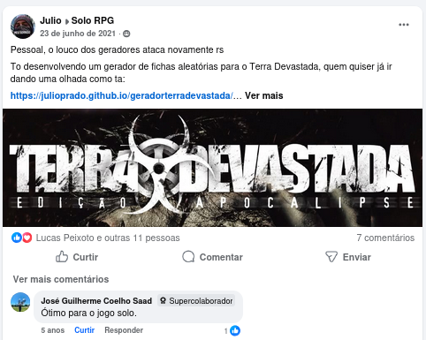
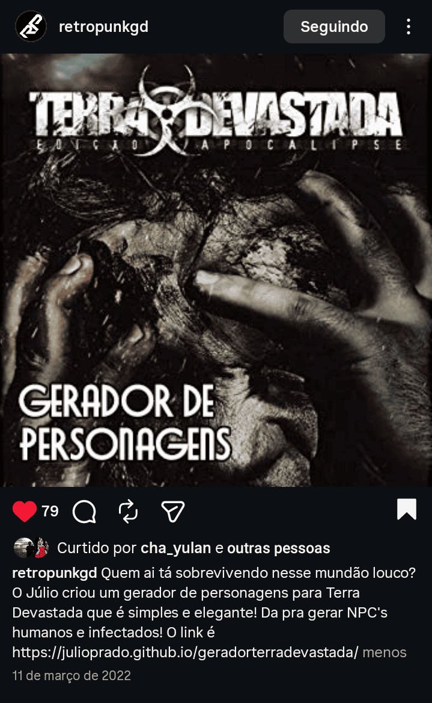
Eu não lembro ao certo se eu já tinha começado a fazer o gerador de personagens para M&M ou se foi depois, mas eu sabia que eu iria continuar fazendo geradores para outros sistemas (que eu não encontrasse feito na internet), e também em meio à tantas tabelas e oráculos diferentes para se jogar RPG solo, eu decidi criar o meu próprio oráculo, com as tabelas e items que eu quisesse. Não demorou pra eu chegar na ideia de criar um site pra reuniar todas essas ferramentas e as que eu viesse a fazer no futuro, e então no dia 22/07/2021, eu fiz o primeiro commit do site, dando vida ao AleatorizeRPG, que na época recebia o nome provisório de rpg-aux, pois a ideia era ser um auxiliar para o seu RPG. A conta do repositório original foi excluída, mas consegui ter acesso à essas informações no softwareheritage.
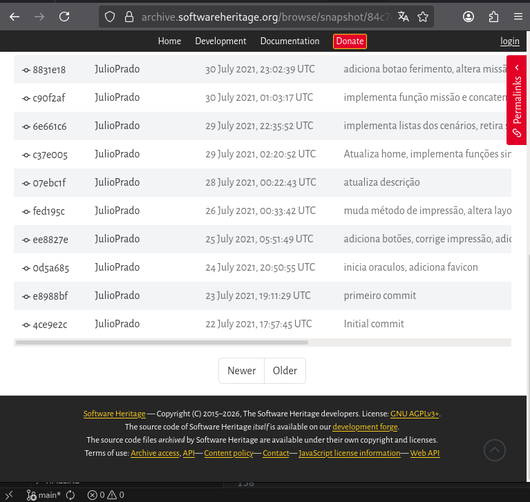
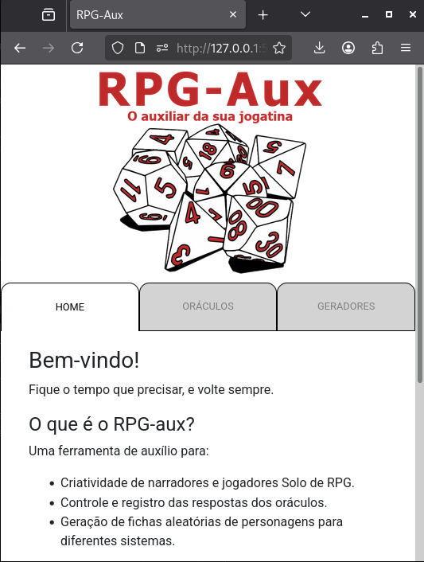
Em 06/01/2022 uma pessoa muito especial abraçou uma ideia minha e me fez uma tattoo homenageando esse hobby. A tatuagem foi feita usando uma técnica que ela estava estudando na epoca e o desenho consiste em um livro aberto, com asas de dragão saindo dele e dados de RPG em volta.
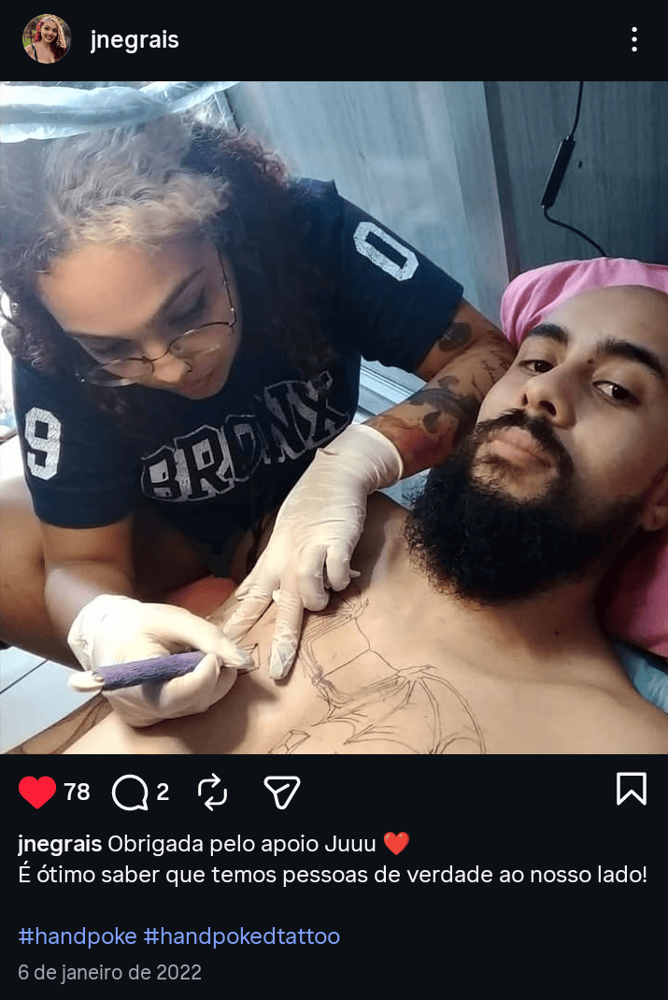
Entre 2021 e 2022 eu tava cansado de ter que aprender um sistema novo do zero toda vez que quisesse jogar um cenário ou ambientação diferente, eu decidi escolher um sistema de RPG genérico (ou versátil) para priorizar, já que dá pra jogar campanhas de fantasia medieval, super poderes, scifi e qualquer outro cenário usando o mesmo sistema. À essa altura eu já havia tido contato com GURPS, mas eu não gosto de rolar dados e torcer por numeros baixos, é totalmente contra intuitivo pra mim. Então conheci o Savage Worlds, o sistema rápido, divertido e furioso, onde os combates são frenéticos, a iniciativa é usando cartas de baralho e tem uma ordem diferente toda rodada e os dados podem gerar áses infinitamente, fazendo com que toda luta tenha um certo grau de imprevisibilidade. Eu amei. Confesso que fiquei um pouco obcecado e cheguei a comprar quase tudo que existia em português e que me interessava desse sistema, todos os compêndios e quase todos os cenários, escudos, e até um livro de cenário autografado pelo autor que é norte-americano.
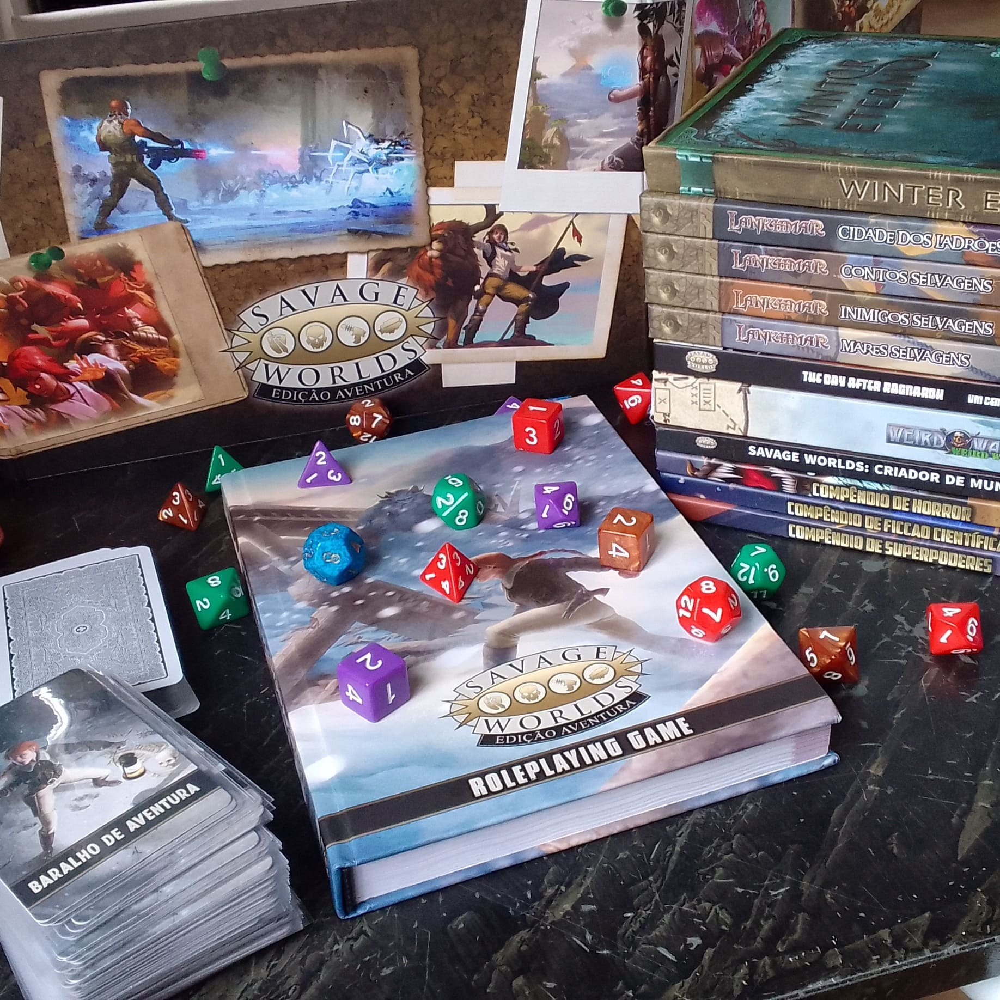
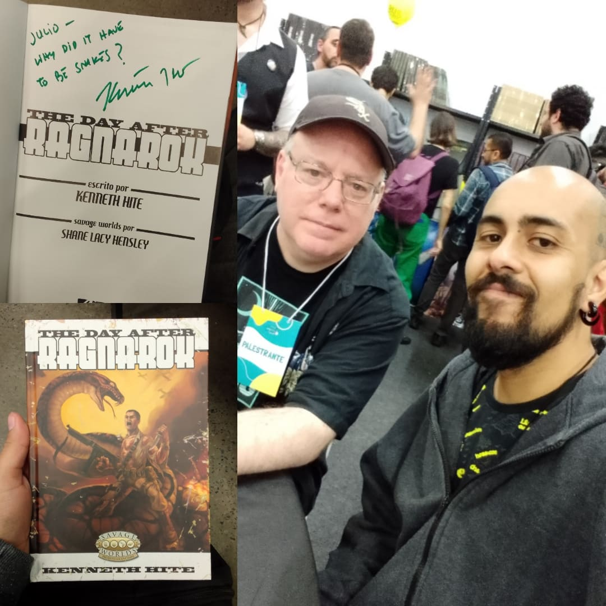
Com essa minha paixão pela aleatoriedade, fichas aleatórias, oráculos e etc, me veio a ideia de deixar a identidade do site com esse foco. O nome "Aleatorize" surgiu como um convite para mestres e jogadores sairem do óbvio e do esperado. Depois Uma outra pessoa muito especial fez uma arte digital do desenho que eu tatuei, fazendo alguns ajustes que eu pedi e escrevendo "Aleatorize" na frente, que depois passou a ser AleatorizeRPG, e então o projeto tomou as cores, o cheiro e o sabor que eu sempre quis pra ele, e seguiu sendo um local cheio de ferramentas para criar personagens aleatórios e criar/jogar aventuras usando oráculos entre outras ferramentas pra deixar o seu RPG menos previsível e mais aleatório.
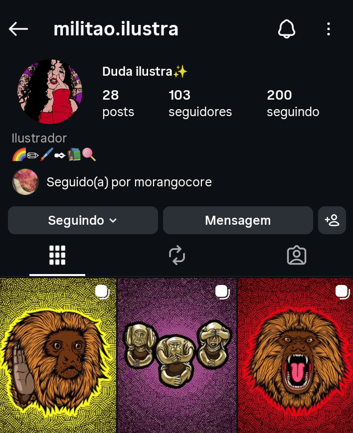
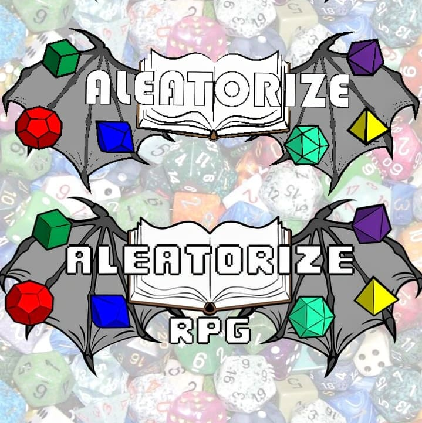
OBS sobre o domínio: Em 01/06/2022 eu comprei o domínio aleatorize.online, inclusive em alguns destaques e postagens esse é o link que está lá, mas depois mudei para o domínio atual: aleatorizerpg.com.
Em 21/03/2022 eu anunciei na comunidade de Savage Worlds do facebook que eu tinha começado a fazer o gerador de personagens para SWADE. E como eu só consigo desenvolver para o site no tempo livre, e esse gerador era mais complexo que os outros, depois de ter abandonado algumas vezes eu consegui terminar ele com (quase) todas as funcionalidades que eu queria.
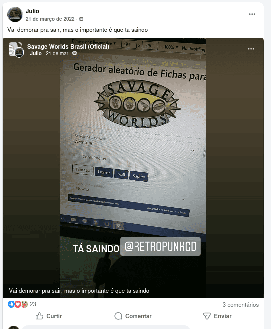
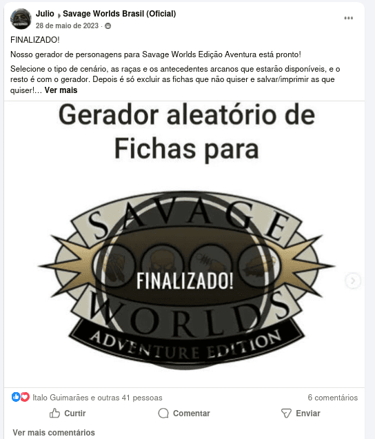
Eu tava bastante feliz com o resultado e conforme fui fazendo ajustes ele foi se tornando cada vez mais como eu queria, e através de feedbacks eu fui implementando algumas funcionalidades que as pessoas pediam e que eu de fato achasse útil. Eu já estava muito satisfeito mas o apoio da comunidade fez toda diferença e ver que as ferramentas estavam ajudando outros jogadores e mestres me motivava ainda mais a continuar. Encontrar a galera nos eventos presenciais, principalmente a comunidade do RPG solo, e trocar ideia sobre isso era incrível.
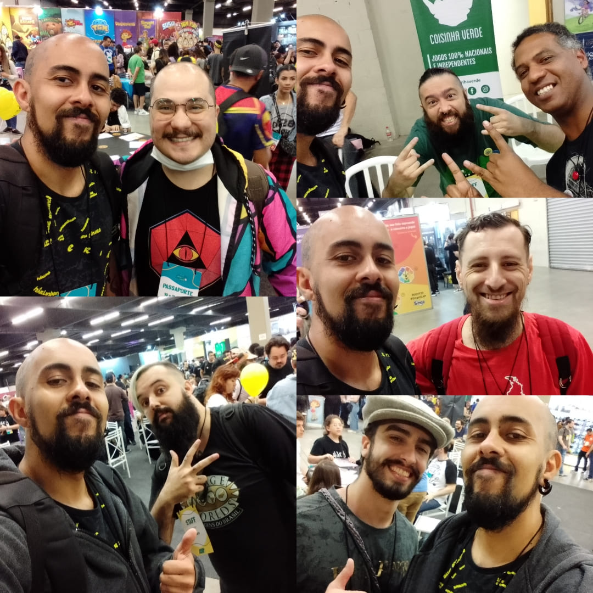
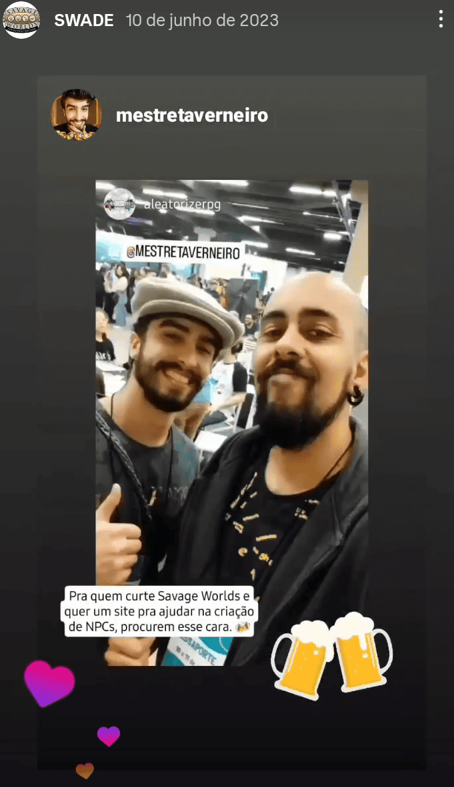
Em 24/06/2024 eu fui coagido a abrir um canal no youtube (foto do setup improvisado do primeiro video logo abaixo), inicialmente pra registrar algumas sessões que eu fosse mestrar ou jogar, mas também para postar videos dos eventos que eu fosse, dar dicas para narradores e jogadores de RPG, falar sobre sistemas e cenários que me chamassem a atenção e o que mais me desse na telha. Não demorou muito pra eu descobrir que gravar e editar os videos sozinho consome MUITO tempo, principalmente quando você gosta de narrar sessões de 4 horas de duração, então eu tenho gravado muito menos do que eu gostaria. No final de 2025 eu tive uma ideia de criar uma aventura inteira usando oráculos, totalmente aleatória, e narrar ela para alguns grupos diferentes, pra ver os caminhos e escolhas diferentes de cada grupo e ver como as personalidades dos jogadores influenciariam a forma como eles chegariam até o final da one shot (que acabou levando 3 sessões). No total deu mais de 20 horas de video bruto, juntando o video criando a aventura e as sessões com cada um dos grupos e eu simplesmente desisti, apaguei todos os arquivos e decidi que não valia a pena. Toda essa preocupação em criar conteúdo para o youtube e para as redes sociais, se juntam com a pressão já existentes das tarefas do cotidiano e percebi que às vezes acabava deixando de me fazer bem para se tornar mais um gerador de stress. Decidi deixar de lado a criação de conteúdo (constante) e hoje eu posto mais os eventos que eu vou, sessões de RPG com voice over, que é mais fácil de editar, e os registros textuais de algumas sessões solo.
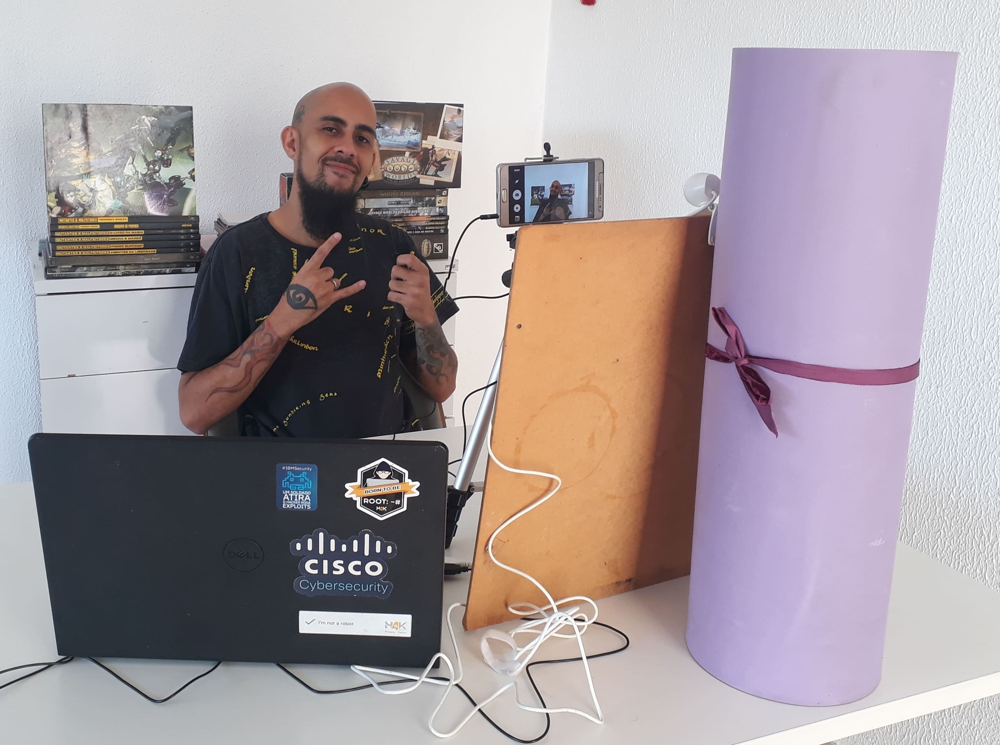
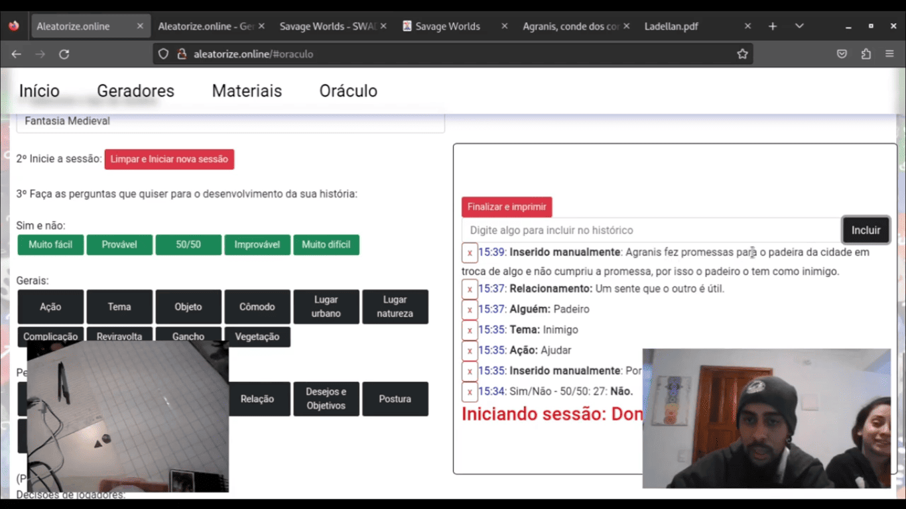
Com a popularização das IAs generativas ficou muito fácil você promptar solicitando uma ficha de personagem aleatória de qualquer sistema e receber ela completa até com a história do personagem já gerada ou mesmo uma aventura completa, já recebendo todos os detalhes necessários pra narrar, mas eu continuo preferindo fazer desse jeito: gerar o personagem (com um gerador ou rolando em tabelas) e "ler" ela pra ir criando uma história para aaquele personagem que faça sentido com aquela distribuição de pontos, usar oráculos para obter palavras-chave e com elas usar da imaginação e criatividade para gerar aventuras, histórias e quaisquer outras coisas que eu quiser. Então eu sigo desenvolvendo ferramentas e materiais para o site, melhorando as ferramentas já implementadas, jogando RPG solo, mestrando para o meu grupo de amigos internacionais e tentando postar no youtube quando dá.
Esse cantinho da internet é onde estão minhas criações e meus registros RPGísticos, espero que de alguma forma eles sejam positivos pra vocês como são pra mim.